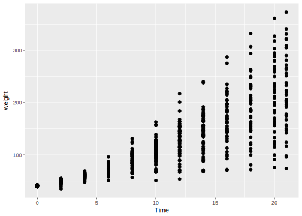
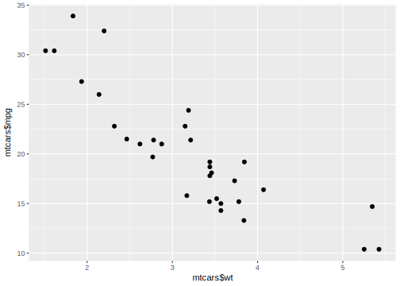
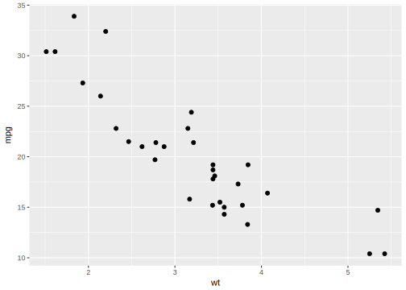
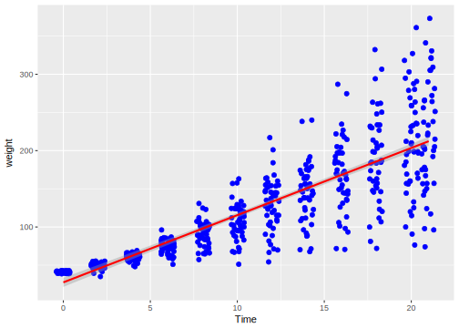
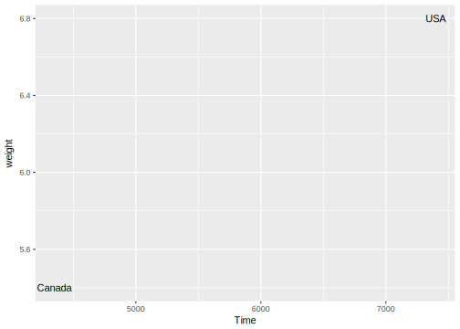

5.1 Part1
tophit <- tophitters2001[1:25,]## Error in eval(expr, envir, enclos): object 'tophitters2001' not foundtophit <- tophit[,c("name", "lg", "avg")]## Error in eval(expr, envir, enclos): object 'tophit' not found# y축 이산형 그래프
ggplot(tophit, aes(x = avg, y = name, col=lg)) + geom_point()## Error in ggplot(tophit, aes(x = avg, y = name, col = lg)): object 'tophit' not found# 그래프 정렬하기 & 그래프 격자 없애기 & 수평선 점선으로 바꾸기
ggplot(tophit, aes(x = avg, y = reorder(name, avg))) + geom_point(size = 3) + theme_bw() +
theme(panel.grid.major.x = element_blank(),
panel.grid.minor.x = element_blank(),
panel.grid.major.y = element_line(color = "grey60", linetype = "dashed"))## Error in ggplot(tophit, aes(x = avg, y = reorder(name, avg))): object 'tophit' not found# x, y축 바꿔서 그치기 & 그래프 격자 없애기 & 수직선 점선으로 바꾸기 & X축 값 정의 및 회전
ggplot(tophit, aes(x = reorder(name, avg), y = avg)) + geom_point(size = 3) + theme_bw() +
theme(axis.text.x = element_text(angle = 60, hjust = 1),
panel.grid.major.y = element_blank(),
panel.grid.minor.y = element_blank(),
panel.grid.major.x = element_line(color = "grey60", linetype = "dashed"))## Error in ggplot(tophit, aes(x = reorder(name, avg), y = avg)): object 'tophit' not found# 두개 변수로 정의하여 그리기
nameorder <- tophit$name[order(tophit$lg, tophit$avg)]## Error in eval(expr, envir, enclos): object 'tophit' not foundtophit$name <- factor(tophit$name, levels = nameorder)## Error in factor(tophit$name, levels = nameorder): object 'tophit' not found# 격자 선이 그래프의 끝에서 끝까지 횡단하지 않고, 점까지만 가도록 표현 [ geom_segment ]
ggplot(tophit, aes(x = avg, y = name)) +
geom_segment(aes(yend = name), xend = 0, color = "grey50") + geom_point(size = 3, aes(color = lg)) +
scale_color_brewer(palette = "Set1", limits = c("NL", "AL")) + theme_bw() +
theme(panel.grid.major.y = element_blank(), legend.position = c(1, 0.55), # 범례를 그래프 안쪽으로 옮김
legend.justification = c(1, 0.5))## Error in ggplot(tophit, aes(x = avg, y = name)): object 'tophit' not found# 그룹 별 그래프 분할
ggplot(tophit, aes(x = avg, y = name)) +
geom_segment(aes(yend = name), xend = 0, color = "grey50") + geom_point(size = 5, aes(color = lg)) +
scale_color_brewer(palette = "Set1", limits = c("NL", "AL"), guide = FALSE) + theme_bw() +
theme(panel.grid.major.y = element_blank()) + facet_grid(lg ~ ., scales = "free_y", space = "free_y") ## Error in ggplot(tophit, aes(x = avg, y = name)): object 'tophit' not found# 그룹 별 데이터 구별
# 색상기준
ggplot(heightweight, aes(x = ageYear, y = heightIn, color = sex)) + geom_point()## Error in ggplot(heightweight, aes(x = ageYear, y = heightIn, color = sex)): object 'heightweight' not found# 점 모양 기준
ggplot(heightweight, aes(x = ageYear, y = heightIn, shape = sex)) + geom_point()## Error in ggplot(heightweight, aes(x = ageYear, y = heightIn, shape = sex)): object 'heightweight' not foundggplot(heightweight, aes(x = ageYear, y = heightIn, color = sex, shape = sex)) + geom_point() +
scale_shape_manual(values = c(1,2)) + scale_color_brewer(palette = "Set1")## Error in ggplot(heightweight, aes(x = ageYear, y = heightIn, color = sex, : object 'heightweight' not foundggplot(heightweight, aes(x = ageYear, y = heightIn, color = sex, shape = sex)) + geom_point() +
scale_shape_manual(values = c(3,2)) + scale_color_brewer(palette = "Set1")## Error in ggplot(heightweight, aes(x = ageYear, y = heightIn, color = sex, : object 'heightweight' not found# 기준 정의에 따라 구별
hw <-heightweight## Error in eval(expr, envir, enclos): object 'heightweight' not foundhw$weightGroup <- cut(hw$weightLb, breaks = c(-Inf, 100, Inf), labels = c("< 100", ">= 100"))## Error in cut(hw$weightLb, breaks = c(-Inf, 100, Inf), labels = c("< 100", : object 'hw' not found# x축이 이산형일 때 점들을 랜덤하게 조금식 이동시켜 표현
ggplot(ChickWeight, aes(x = Time, y = weight)) + geom_point()
ggplot(ChickWeight, aes(x = Time, y = weight)) + geom_jitter() # 이동 적용
# 적합된 회귀선 추가하기
sp <- ggplot(ChickWeight, aes(x = Time, y = weight))
sp + geom_point(color = "blue") + stat_smooth(method = lm, se = TRUE, color = "red") 
sp + geom_jitter(color = "blue") + stat_smooth(method = lm, se = TRUE, color = "red")
#그룹 별 회귀선 추가하기
sps <- ggplot(heightweight, aes(x = ageYear, y = heightIn, color = sex)) +
geom_point() + scale_color_brewer(palette = "Set1")## Error in ggplot(heightweight, aes(x = ageYear, y = heightIn, color = sex)): object 'heightweight' not foundsps + geom_smooth()## Error in eval(expr, envir, enclos): object 'sps' not found# 예측값 실제값 그래프로 표현하기 (함수)
predictvals <- function(model, xvar, yvar, xrange = NULL, sample = 100, ...){
if(is.null(xrange)){
if(any(class(model) %in% c("lm", "glm")))
xrange <- range(model$model[[xvar]])
else if(any(class(model) %in% "loess"))
xrange <- range(model$x)
}
newdata <- data.frame(x = seq(xrange[1], xrange[2], length.out = sample))
names(newdata) <- xvar
newdata[[yvar]] <- predict(model, newdata = newdata, ...)
newdata
}
modlinear <- lm(heightIn ~ ageYear, heightweight)## Error in is.data.frame(data): object 'heightweight' not foundmodloess <- loess(heightIn ~ ageYear, heightweight)## Error in is.data.frame(data): object 'heightweight' not foundlm_predicted <- predictvals(modlinear, "ageYear", "heightIn")## Error in class(model) %in% c("lm", "glm"): object 'modlinear' not foundloess_predicted <- predictvals(modloess, "ageYear", "heightIn")## Error in class(model) %in% c("lm", "glm"): object 'modloess' not foundsp <- ggplot(heightweight, aes(x = ageYear, y = heightIn)) +
geom_point(color = "grey40")## Error in ggplot(heightweight, aes(x = ageYear, y = heightIn)): object 'heightweight' not foundsp + geom_line(data = lm_predicted, color = "red", size = 0.8) +
geom_line(data = loess_predicted, color = "blue", size = 0.8)## Error in fortify(data): object 'lm_predicted' not found#산점도의 점에 라벨 붙이기
sp <- ggplot(subset(countries, Year == 2009 & healthexp > 2000),
aes(x = healthexp, y = infmortality)) + geom_point()## Error in subset(countries, Year == 2009 & healthexp > 2000): object 'countries' not found# 특정 값에 특정 단어로 라벨 붙이기
sp + annotate("text", x = 4350, y = 5.4, label = "Canada") +
annotate("text", x = 7400, y = 6.8, label = "USA")
# 데이터 값을 라벨로 붙이기
sp + geom_text(aes(label = Name), size = 4)## Error in FUN(X[[i]], ...): object 'Name' not found# 라벨의 위치를 데이터값보다 조금 크게 설정
sp + geom_text(aes(y = infmortality + 0.1, label = Name), size = 4, vjust = 0)## Error in FUN(X[[i]], ...): object 'infmortality' not foundsp + geom_text(aes(x = healthexp + 100, label = Name), size = 4, hjust = 0)## Error in FUN(X[[i]], ...): object 'healthexp' not found# 특정 값만 라벨 붙이기
cdat <- subset(countries, Year == 2009 & healthexp > 2000)## Error in subset(countries, Year == 2009 & healthexp > 2000): object 'countries' not foundcdat$Name1 <- cdat$Name ## Error in eval(expr, envir, enclos): object 'cdat' not foundidx <- cdat$Name %in% c("Andorra", "France", "Canada") ## Error in cdat$Name %in% c("Andorra", "France", "Canada"): object 'cdat' not foundcdat$Name1[!idx] <- NA## Error in cdat$Name1[!idx] <- NA: object 'cdat' not foundggplot(cdat, aes(x = healthexp, y = infmortality)) + geom_point() + geom_text(aes(y = infmortality + 0.1, label = Name1), size = 4, vjust = 0)## Error in ggplot(cdat, aes(x = healthexp, y = infmortality)): object 'cdat' not found## Warning: Removed 24 rows containing missing values (geom_text).